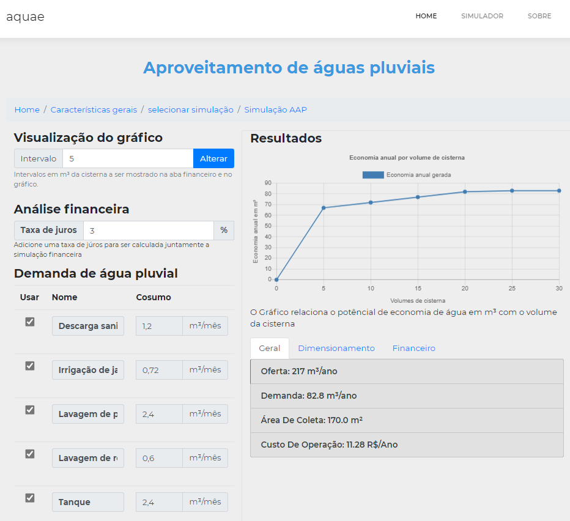

Como utilizar
Para começar a fazer simulações no aquae basta acessar a área de simulação como mostrado na figura abaixo.

Na área da simulação primeiramente selecione o tipo de edificação da sua residência. Logo após isso preencha os campos de acordo com o que eles pedem.

Após ter preenchido os campos solicitados preencha os campos de demandas de água não potáveis, contendo a frequência mensal de uso e o total do uso como indicado no texto ao lado do campo relacionado ao indicador de uso final.

Caso haja algum campo de demanda de água que sua residência não utiliza, sinta-se livre para excluí-lo.

Você também pode adicionar outros tipos de uso de água não potável que não estão listados. Ao fazer isso adicione : o nome do consumo; frequência mensal e a média de litros por dia.

Ao clicar em próximo você será enviado para a página de seleção de simulação podendo escolher entre a Simulação de Aproveitamento de águas pluviais ou de Reúso de Águas Cinzas.

Ao selecionar AAP sua simulação estará pronta em uma nova página como a seguinte. Nela é possível ver duas colunas principais. A primeira coluna permite que você possa alterar pequenos detalhes da simulação como o intervalo de cisternas; taxa de juros e quais demandas de água usar na simulação.
Na segunda coluna é possível visualizar um gráfico relacionando o potencial de economia de água com os possíveis volumes de cisternas. Observe que quanto maior o volume da cisterna, maior é a economia, entretanto essa economia acaba por estagnar a medida que o volume for subindo. Abaixo do gráfico há três abas, Geral, Dimensionamento e Financeiro** que respectivamente mostram: Informações gerais relacionadas a simulação; Dimensionamento de algumas Características do sistema e análise financeira da simulação com base nos volumes de cisterna.
